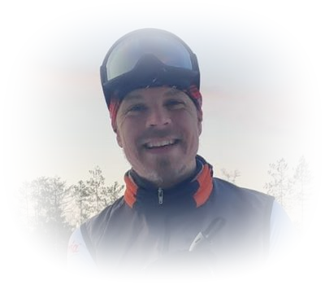

Esittely
Profiili

Markus Hytönen toimii kaavoittajana, asiantuntijana, kehittäjänä ja projektipäällikkönä maankäytön suunnittelun tehtävissä. Hän on toiminut vastuullisissa asiantuntijatehtävissä yli 50 kaavassa yli 30 kunnassa. Erityisesti hänellä on kokemusta suurista yleiskaavahankkeista.
Uransa alusta saakka hän on kehittänyt kaavoitusta tietomallipohjaiseksi paikkatieto-ohjelmistojen avulla. Viime vuosina hän on ollut vahvasti mukana kaavoituksen digitalisaation kehittämisessä RYHTI-hankkeessa ja laatinut muun muassa kansallista kaavamääräyskokoelmaa yleis- ja asemakaavoille.
Hänen erityinen vahvuutensa on hahmottaa asiakokonaisuuksien ja aineistojen välisiä yhteyksiä sekä yhdistää aiemmin erillään olleita asioita, mikä tekee toiminnasta johdonmukaisempaa ja tehokkaampaa.
Osaaminen
Koulutus ja pätevyydet
- Maanmittausinsinööri (AMK), Mikkeli, 1999–2003
- Kaavanlaatijan pätevyys (FISE)
- Nuoren yhdyskuntasuunnittelijan MOPO 5 (TKK), 2007
- Kaavoitusprosessin peruskoulutus (Efeko), 2006
- Kaavoitukseen ja paikkatietoihin liittyviä koulutuksia vuosittain
Ura
Työhistoria
-
2021–
Perustaja, toimitusjohtaja ja maankäytön johtava asiantuntija
PlanDisain Oy
-
2018–2020
Kaavoituksen digitalisaation johtava asiantuntija, projektipäällikkö
Ramboll Finland Oy
Ympäristö ja terveys -toimialan laatuvastaava.
-
2007–2018
Projektipäällikkö, kaavoitusinsinööri
Ramboll Finland Oy
Maankäytön suunnittelu ja GIS. Vuodesta 2015 Vesi ja ympäristö -toimialan laatuvastaava, laatujärjestelmän kehittäminen.
-
2004–2006
Suunnitteluinsinööri
Insinööritoimisto Paavo Ristola Oy
Maankäytön suunnittelu ja paikkatietojärjestelmät.
-
2003
Projektityöntekijä
Konneveden kunta
Vesi- ja viemäriverkoston numeeristaminen MapInfoon.
-
2002–2003
Projektityöntekijä
Sumiaisten kunta
Paikkatietojärjestelmän kehittäminen ja kaavoitusavustaja.
Kaavoitus
Laaditut kaavat
Kaavat, joiden laatimisessa Markus Hytönen on toiminut vastuullisena asiantuntijana. Mukana ovat myös aiempien työnantajien hankkeet.
Yleiskaavat (10)
- Saarijärven kaupunki – Jäteveden puhdistamon yleiskaava 2021–2023
- Pieksämäen kaupunki – Keskusta-alueen strategisen yleiskaavan muutos 2021–2025
- Hollolan kunta – Strateginen yleiskaava 2018–2020
- Kangasalan kaupunki – Kuhmalahden kirkonkylän osayleiskaava 2016–2021
- Kangasalan kaupunki – Pohjan kylän osayleiskaava 2016–2021
- Rautjärven kunta – Simpele-Änkilä osayleiskaavan muutos ja laajennus 2018–2020
- Parikkalan kunta – Kolmikannan osayleiskaava 2013–2016
- Parikkalan kunta – Koirniemen osayleiskaava 2013–2016
- Salon kaupunki – Rannikon osayleiskaava 2007–2009
- Laukaan kunta – Vehniän osayleiskaava 2005–2008
Rantayleiskaavat (MRL 72 §) (19)
- Heinäveden kunta – Heinäveden läntisten alueiden rantayleiskaavamuutos 2025–
- Sulkavan kunta – Kyrsyän rantaosayleiskaava 2023–2025
- Saarijärven kaupunki – Taajamarantojen ja Summassaaren yleiskaavoitus 2022–
- Taipalsaaren kunta – Suursaimaan rantayleiskaavan muutos 2022–2026
- Heinäveden kunta – Heinäveden itäisten alueiden rantayleiskaavamuutos 2022–2025
- Savonlinnan kaupunki – Oravin–Joutenveden rantayleiskaavan muutos 2022–2025
- Saarijärven kaupunki – Pyhäjärven, Pylkönmäen rantayleiskaavojen ja Viiden kylän yleiskaavan muutos 2022–
- Asikkalan kunta – Ruotsalaisen rantaosayleiskaava 2021–2025
- Pieksämäen kaupunki – Pyhäjärven rantaosayleiskaava 2021–2025
- Padasjoen kunta – Päijänteen rantaosayleiskaavamuutos 2017
- Heinäveden kunta – Pohjois-Heinäveden rantayleiskaavamuutos 2017–2020
- Varkauden kaupunki – Esiselvitys kaikkien rantayleiskaavojen yhtenäistämisestä 2017
- Kangasalan kaupunki – Kuhmalahden rantaosayleiskaava 2016–2021
- Padasjoen kunta – Päijänteen ROYK-muutos, Vaimolahti 2016–2017
- Rautjärven kunta – Rautjärven rantayleiskaavan tarkistus ja laajennus 2010–2012
- Kitee, Rääkkylä, Kesälahti – Oriveden rantaosayleiskaava 2009–2015
- Porvoon kaupunki – Pellingin saariston osayleiskaava 2008–2015
- Pertunmaan kunta – Rantaosayleiskaava 2004–2017
- Kuhmoisten kunta – Päijänteen rantayleiskaavan muutokset 2006–2010
Kylä- ja rantayleiskaavojen yhdistelmät (6)
- Nastolan kunta – Uudenkylän osayleiskaava 2012–2016
- Parikkalan kunta – Uukuniemen yleiskaavamuutos 2011–2013
- Kerimäen kunta – Anttolan kylän osayleiskaava 2012
- Jyväskylän maalaiskunta – Oravasaaren ja Ilmopohjan osayleiskaava 2006–2008
- Heinolan kaupunki – Lusin osayleiskaava VS 2005–2007
- Kangasniemen kunta – Keskustan osayleiskaava 2004–2006
Asemakaavat (5)
- Asikkalan kunta – Reimarin asemakaava 2007–2019
- Tohmajärven kunta – Niiralan asemakaavan muutos 2015
- Asikkalan kunta – Asikkalantien asemakaavamuutos 2013
- Tohmajärven kunta – Kemien asemakaavat 2012
- Tohmajärven kunta – Niiralan asemakaavat 2012
Ranta-asemakaavat (21)
- Vaalan kunta – Teeriniemen ranta-asemakaavan muutos ja laajennus 2021–2025
- Heinolan kaupunki – Pekonniemen ranta-asemakaavan muutos 2021
- Hartolan kunta – Aurinkorannan ranta-asemakaavan muutos 2021
- Padasjoen kunta – Kellosalmen ranta-asemakaava 2018–
- Padasjoen kunta – Kaarinkorven, Rujalan ja Keulainmetsän ranta-asemakaavojen muutokset 2017–2018
- Asikkalan kunta – Kaarelan ranta-asemakaavan muutos 2016
- Asikkalan kunta – Lumialan jakokunnan ranta-asemakaava 2015
- Savonlinnan kaupunki – Matkonsalon ranta-asemakaava 2014
- Asikkalan kunta – Suvirannan ranta-asemakaava 2013
- Kiteen kaupunki – Lomarastin ranta-asemakaava 2012
- Hartolan kunta – Purnuvuoren ranta-asemakaavan muutos 2012
- Rautjärven kunta – Annanniemen ranta-asemakaavan muutos 2011
- Raaseporin kaupunki – Bredvikin ranta-asemakaavan muutos 2010
- Hartolan kunta – Rääpönsalmen ranta-asemakaavan muutos ja laajennus 2008
- Heinolan kaupunki – Ruukki, Vähä-Kalliojärvi, Iso-Kalliojärvi ja Iso-Rihu ranta-asemakaava 2007
- Heinolan kaupunki – Saaren ranta-asemakaavan muutos 2007
- Asikkalan kunta – Hietamäen ranta-asemakaava 2007
- Asikkalan kunta – Pernasaaren ranta-asemakaavan muutos 2007
- Padasjoen kunta – Siilinsaaren ranta-asemakaava 2007
- Asikkalan kunta – Keltaniemen ranta-asemakaava 2004
- Lahden kaupunki – Enonsaaren ranta-asemakaava 2004
Digitalisaatio
Maankäytön suunnittelun kehittämistehtävät
Paikkatieto-, kehitys- ja määrittelytehtävät, joissa Markus Hytönen on toiminut keskeisessä asiantuntijaroolissa.
Kehittämistehtävät (20)
- SYKE / Paimion kaupunki – OSKati-hanke 2024–
- SYKE / Pohjois-Savon kunnat – VOOKA-hanke 2023
- SYKE / Etelä-Savon kunnat – VOOKA-hanke 2022
- Ubigu Oy / Ympäristöministeriö – Asemakaavan ja yleiskaavan kaavamääräyskokoelma 2022
- Ympäristöministeriö – Rakennusperinnön ja arkeologisen kulttuuriperinnön suojelua koskevien päätösten tietomallit 2021
- Ubigu Oy / Ympäristöministeriö – Maankäyttörajoitusten tietomallit 2021
- Ubigu Oy / Maanmittauslaitos – Kansallisen maastotietokannan käyttö kiinteistöveroselvityksissä 2021
- Ramboll / Ympäristöministeriö – Rakennuksen elinkaaren vaihe -koodisto 2021
- Ympäristöministeriö – Rakennetun kulttuuriympäristön tietomalli 2021
- Pohjois-Karjalan ELY-keskus / Ympäristöministeriö – Rakennetun kulttuuriympäristön tiedonhallintaratkaisu 2020
- Hollolan strategisen yleiskaavan selainpohjainen julkaisu ja seuranta 2020
- Ympäristöministeriö – Tulevaisuuden maankäyttöpäätökset 2030 2019–2020
Selvitys ja tiekartta maankäyttöpäätöstietojen digitalisoinnista; tietomallien arviointi ja kehittäminen yhteentoimiviksi keskenään ja valtakunnallisten aineistojen kanssa. Osahankkeet:
- tietovirtojen ja käsitemallien simulointi ja kehittäminen (projektipäällikkö)
- päätös- ja lähtötietojen erottaminen ja kansallinen saatavuus (projektipäällikkö)
- maankäyttöpäätösten viitearkkitehtuuri (asiantuntija)
- Ympäristöministeriö – Kaavojen digitoinnin selvitys 2018
Perusteltu esitys siitä, kannattaako Suomen kaikki kaavat digitoida ja miten se tehdään.
- Rambollin sisäinen digikaavoituksen kehityshanke 2017
- karttapalvelu.ramboll.fi – WFS-rajapintajulkaisu useisiin kuntiin 2016–2017
- MMM – Metsätaloudellisten vaikutusten GIS-pohjainen arviointi Kuhmalahden kaavoissa, pilotti 2017
- Ramboll – Paikkatietopalvelut digitalisaatioon liittyen, kehityshanke 2016
- Ympäristöministeriö – Kuntien rajapintapilotti (Asikkala, Keitele, Tohmajärvi, Joutsa, Liperi, Sysmä, Kitee) 2015
- Morenia – Paikkatietojen soveltaminen YVA-projekteissa 2005
- Keski-Suomen liitto – Paikkatietojärjestelmän soveltaminen jätealueiden etsimisessä sovituilla kriteereillä 2004
Vuorovaikutus
Vuorovaikutus ja havainnollistaminen
Vuorovaikutushankkeet (4)
- Ympäristöministeriön tietomallimääritystöiden vuorovaikutus kyselyin ja Miro-työpajoin 2020–2022 (kuusi hanketta, ks. kehittämistehtävät: kaavamääräyskokoelma, rakennusperinnön tietomalli, maastotietokanta kiinteistöveroselvityksissä, maankäyttörajoitukset, rakennuksen elinkaaren vaihe -koodisto, rakennetun kulttuuriympäristön tiedonhallintaratkaisu)
- PlanDisain Oy:n vuorovaikutusalustan määrittely 2021
- Hollolan strateginen yleiskaava 2019–2020 – työpajat ja yleisötilaisuus Mural-alustalla
- Ramboll Finland Oy:n kaavoituksen karttapalautejärjestelmän määrittely 2015
Karttapalautejärjestelmän käyttö kaavahankkeissa (13)
- Pieksämäen kaupunki – Keskustan strategisen yleiskaavan muutos 2021–2025
- Pieksämäen kaupunki – Pyhäjärven rantaosayleiskaava 2021–2025
- Asikkalan kunta – Ruotsalaisen rantaosayleiskaava 2021–2025
- Hollolan kunta – Strateginen yleiskaava 2018–2020
- Heinäveden kunta – Pohjois-Heinäveden rantayleiskaavamuutos 2017–2020
- Kangasalan kaupunki – Kuhmalahden rantaosayleiskaava 2016–2021
- Parikkalan kunta – Kolmikannan osayleiskaava 2013–2016
- Parikkalan kunta – Koirniemen osayleiskaava 2013–2016
- Kerimäen kunta – Anttolan kylän osayleiskaava 2012
- Parikkalan kunta – Uukuniemen yleiskaavamuutos 2011–2013
- Rautjärven kunta – Rautjärven rantayleiskaavan tarkistus ja laajennus 2010–2012
- Kitee, Rääkkylä, Kesälahti – Oriveden rantaosayleiskaava 2009–2015
- Porvoon kaupunki – Pellingin saariston osayleiskaava 2008–2015
Havainnollistaminen ja analyysit (10)
- Hollolan kuntakeskuksen alueellinen väestöpotentiaali 2020
- Mänttä-Vilppulan kuntataloudellinen selvitys – lomarakennuspaikkojen käyttötarkoituksen muutokset 2018–2019
- Kuusamon kaupunki – Rukan kiinteistöveroselvitys 2018–2019
- Mikkelin taajamayleiskaavan mitoitus ja väestötarkastelut 2018
- Hollolan kunta – haja-asutusalueiden rakennusoikeuslaskelmat 2011, 2015 ja 2017
- Hollolan strateginen yleiskaava – kaavataloudellinen vertailu 2015–2016
- Vihti ja Uusikaupunki – virkistyskäyttöhaitan korvauslaskelmat 2005
- Pääkaupunkiseudun YTV – Loojärven vesistökuormitusselvitys 2005
- Ekokem Oy – paikkatietoselvitys, väestöanalyysi 2004
- Artjärven kunta – vesihuollon numeeristaminen 2004